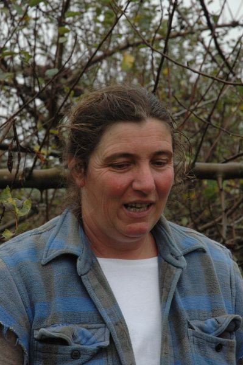

Therese Kohlner

Thérèse Kholer est une bergère passionnée. Sa particularité, c'est une bergère sans terre. Elle se déplace en permanence et promène son troupeau dans la forêt de la Double (raison pour laquelle la viande ne peut pas être certifiée bio). La nourriture du troupeau est très variée et dépend de l'endroit où il se trouve ainsi que de la saison : herbe, ronces, chèvrefeuille et lierre dans la forêt auquel s'ajoutent en automne glands et châtaignes. C'est tout ça qui donne une viande délicieuse et pleine de saveur.
-
coordinateur.rice :
- Anne
- agneau
- Adresse : La fôret de la Double
- Commande : https://cagette.gourmandignes.org/contract/view/76
- contrat(s) :
Contrat : 1 an avec une ou deux distributions par an .
- viande
- bio naturel